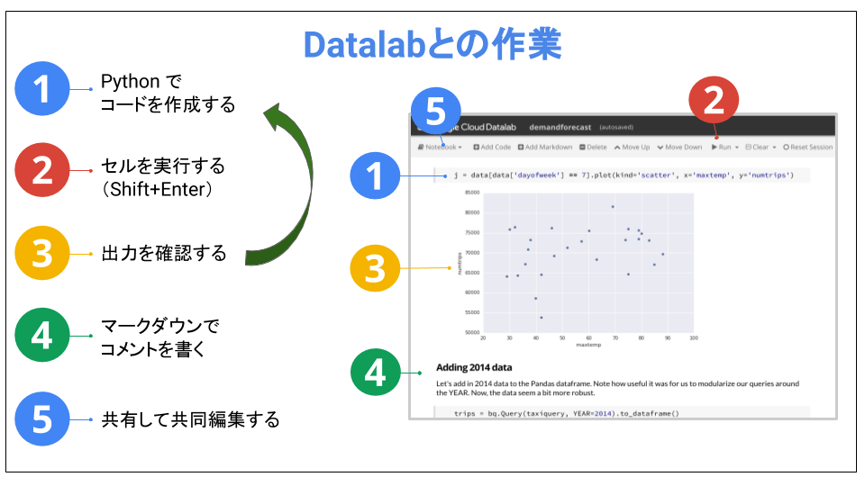

BigQuery を使用した ML データセットの作成
概要
このラボでは、Datalab から BigQuery を使用して Pandas データフレームを作成します。このデータフレームがタクシーの需要予測のトレーニング データになります。
学習内容
このラボの内容:
はじめに
このラボと次のラボでは、機械学習を使用して需要予測システムを構築します。TensorFlow を使用して、毎日のタクシーの需要を予測します。そのためにはまず、タクシーの需要に影響を与える要素（「入力特徴」）と過去の実際の需要（「ターゲット」）で構成されるトレーニング データセットが必要です。このデータを使用してニューラル ネットワークをトレーニングすると、特徴を入力データとして将来の需要を予測できるようになります。
このラボでは、Datalab の BigQuery を使用してデータセットを構築します。このデータセットは次のラボで機械学習に使用します。
設定
タスク 1: Cloud Datalab を起動する
Cloud Datalab を起動するには:
-
Cloud Shell で次のように入力します。
datalab create bdmlvm --zone us-central1-a
Datalab が起動するまでに約 5 分かかります。
注: このプロセスではプロンプトに従って操作します。
Datalab の操作に慣れていない場合には、以下に示す Datalab の主な機能についての図付き早見表をご利用ください。

タスク 2: Cloud Datalab にノートブックをチェックアウトする
注: 必要に応じて、Datalab の起動が終了するまで待ちます。Datalab が使用できる状態になると、「ウェブでプレビュー」を促すメッセージが表示されます。
-
Cloud Shell リボンの右上にある [ウェブでプレビュー] アイコンをクリックします。[ポートの変更] をクリックします。[プレビュー ポートの変更] ダイアログ ボックスを使用してポート 8081 に切り替え、[変更してプレビュー] をクリックします。


注: datalab コマンドがアクティブな間は、Datalab インスタンスへの接続は開いたままになります。datalab コマンドの実行に使用している Cloud Shell がクローズされるかまたは中断されると、Cloud Datalab VM への接続が切断されます。その場合、新しい Cloud Shell でコマンド「datalab connect bdmlvm」を使用すると再接続できる可能性があります。
-
Datalab の右上のリボンにある [Open ungit] アイコンをクリックします。

-
[Ungit] ウィンドウで、/content/datalab/notebooks というテキストを選択します。このテキストから notebooks を削除して /content/datalab にし、Enter キーを押します。

-
表示されるパネルの [Clone from] に、GitHub リポジトリとして次の文字列を入力します。
https://github.com/GoogleCloudPlatform/training-data-analyst
-
[Clone repository] をクリックします。
タスク 3: Datalab ノートブックを開く
-
Datalab ブラウザで [training-data-analyst] > [CPB100] > [lab4a] > [demandforecast.ipynb] に移動します。
-
コメントを読み、[Clear | Clear all Cells] をクリックし、セルに入力された Python スニペットを順番に実行します（Shift+Enter キーを使用するとコードを 1 つずつ実行できます）。
-
「Machine Learning with Tensorflow」のセクションに達したらそれ以上進めないでください。このセクションからは次のラボになります。
マニュアルの最終更新日: 2018 年 10 月 9 日
ラボの最終テスト日: 2018 年 10 月 9 日